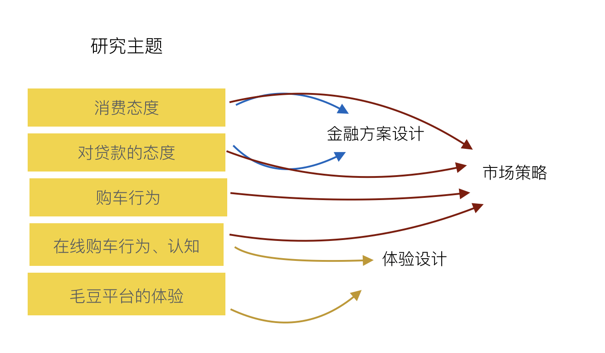
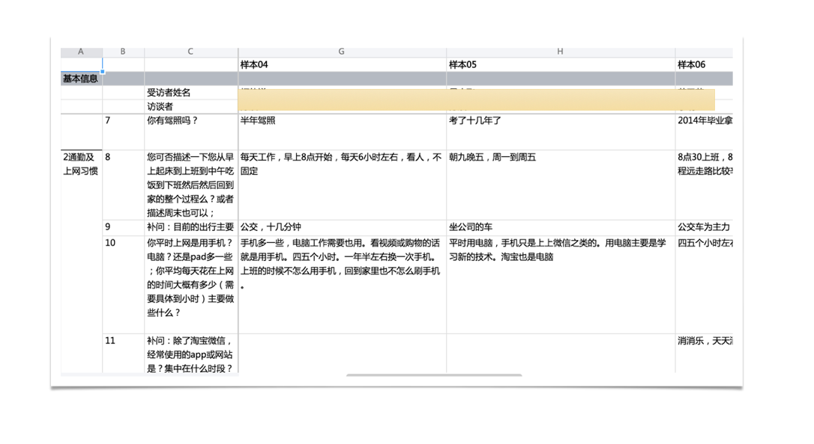
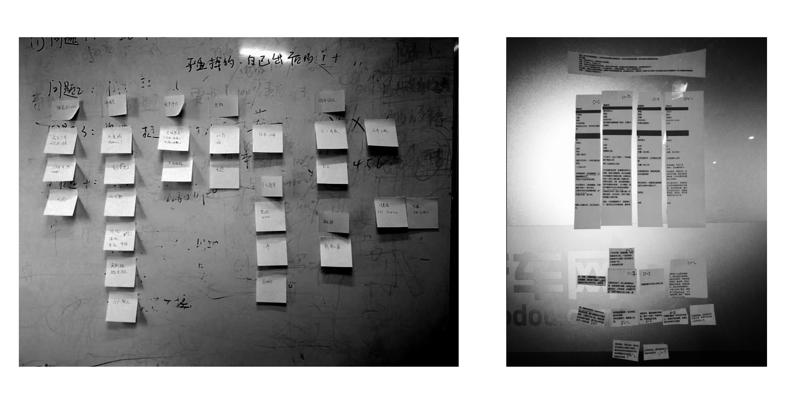

毛豆新车网的交互设计团队与产品团队合作，对 6 个城市有购车需求的潜在客户进行了深度访谈，以理解这三个人群的构成行为和需求，并发掘产品机会点。
项目时间：2018 年 9 月
在启动会上，我们和关键成员对齐主要研究目的
我们组成不同小组，每个小组拜访不同的城市。每个小组有 4 到 6 名成员。
每个调研日，我们会当天开会进行总结。在所以调研结束后，我们有一个星期时间，对所以数据进行总结并撰写报告。
我们发现了一些影响人在线通过贷款购买新车的重要因子，比如年龄和职业。
我们对一些关键变量进行聚类，生成了 3 个人物画像。(结果无法对外展示）
通过发现，我们提取了一些可以用于客户获取，界面设计，金融方案和定价方面的建议。作为 UED 的成员，我们在公司内部向高层和产品经理们展现了体验研究的价值和我们的专业性。
在这个项目中，我承担的角色包括：确定研究框架和研究问题，对项目组成员进行用户研究的培训，研究执行以及和其他关键成员进行最终数据分析和总结。